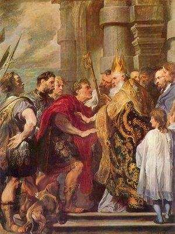
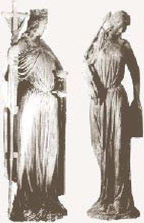

La reprise par quelques journaux de certaines caricatures de Mahomet n'a pas seulement causé des émeutes en milieu musulman, elle a également suscité une réaction négative du Vatican. M. Joaquin Navarro Valls, porte-parole du Saint-Siège, y est allé de son communiqué, dont voici un passage significatif: « Certaines formes de critique à outrance ou de dérision des autres dénotent un manque de sensibilité humaine et peuvent constituer, dans certains cas, une provocation inadmissible. La lecture de l’histoire enseigne que ce n’est pas de cette manière que l’on guérit les blessures existant dans la vie des peuples. » (sur le site Zenit, samedi 4 février 2006). Le Président des évêques de France a été tout aussi sévère à l’égard des journalistes de "France-Soir". Peut-être faudrait-il rappeler au Vatican et aux prélats que l’Église a fait pire. Il est vrai que ce n’était qu’aux dépens des Juifs, comme nous l’allons voir, ci-après. (Menahem Macina).
L’affaire se passe en 388, dans la petite ville de Callinicum, en Mésopotamie, région où l’Église est toute-puissante. À l’instigation de l’évêque, la population chrétienne met le feu à la synagogue. Informé, le très chrétien empereur Théodose oblige l’évêque à indemniser la communauté juive et à reconstruire le lieu de culte à ses frais; il ordonne également que les perpétrateurs soient dûment bastonnés, relate l’historien Marcel Simon 1. Mais, coup de théâtre, Ambroise 2 s’insurge contre cette décision et va s’opposer frontalement à l’empereur. Suivons le récit, par Simon, de ce bras de fer historique entre le pouvoir religieux et le pouvoir civil 3. « [Ambroise] reproche à l’empereur, avec une véhémente indignation, l’attitude qu’il a prise et qui est sacrilège: un prince chrétien n’a pas le droit de favoriser ainsi l’erreur juive. Il est licite d’incendier les synagogues. Si les lois l’interdisent, c’est qu’elles sont mauvaises. Dès lors, leur désobéir devient un devoir. » Et Ambroise d’affirmer que, « s’il avait connu plus tôt l’interdiction, il se serait empressé de faire incendier la synagogue de Milan », sa ville épiscopale. Selon lui, « Dieu lui-même a d’avance approuvé la destruction de ces édifices ». Il ordonne donc au souverain « d’abroger son rescrit », et n’hésite pas à affirmer qu’« il y va de son salut et de celui de ses fils ». Et comme Théodose refusait de céder à cet empiètement ecclésiastique sur ses prérogatives impériales, « Ambroise l’apostropha en pleine église, au cours d’un office, et le menaça, s’il s’obstinait, de l’exclure de la communion ». Finalement les Juifs de Callinicum n’obtinrent aucune réparation. À l’exception des historiens de l’Église, très peu de nos contemporains chrétiens connaissent cet épisode honteux. Pourtant, au-delà du dommage infligé aux Juifs de cette petite ville, ce flagrant déni de justice et cette haine religieuse eurent des conséquences dramatiques pour les Juifs du monde entier. En effet, la législation touchant les Juifs et le judaïsme en fut profondément et durablement affectée 4.

Synagogue déchue Outre les mesures restrictives, voire avilissantes, imposées aux Juifs, on note la présence, dans la législation les concernant, d’expressions et termes injurieux et méprisants, tels que « secte funeste » (Code Théodosien, 16, 8, 1), « Juifs abominables » (Ibid., 16, 18, 26), « assemblée sacrilège » (16, 8, 7), etc. 5. On se demandera peut-être où je veux en venir par ce bref rappel historique – qu’on aurait tort de juger polémique – sur un passé amer. À ceci. Quand elle avait le pouvoir temporel, l’Église a fait preuve de beaucoup d’intolérance, surtout à l’égard des Juifs, comme nous venons de le voir. Il a fallu les Lumières, puis, en France, la séparation de l’Église et de l’État – qui fut chèrement acquise – pour que, contrainte et forcée, elle renonce, non sans une résistance farouche, à son emprise sur la politique et l’enseignement, ainsi que sur les esprits et les comportements de celles et ceux qui ne reconnaissaient pas son autorité. Après un long travail sur elle-même, l’Église a enfin reconnu tout le mal qu’elle avait causé au peuple juif, et en a même fait repentance. C’était il y a plus d’une décennie. M’est avis qu’une ‘conversion’ aussi récente devrait inciter cette honorable institution, dont la vertu est relativement récente en cette matière, à se souvenir de ses errements plutôt qu’à déplorer ceux de quelques journalistes maladroits qui, même dans leurs pires cauchemars, n’avaient pas imaginé que la publication, dans leur journal, de quelques médiocres caricatures, mettrait le feu à la planète, ou peu s’en faut. Je ne voudrais être ni cruel ni irrespectueux, mais je ne puis m’empêcher de trouver suspecte cette compassion, soudaine et empressée, au chevet d’un islam blessé par quelques dessins irrespectueux. En comparaison, le silence catholique face aux flots de haine antisémite arabo- musulmane, qui ne cessent de déferler dans les médias écrits et audiovisuels depuis quelques années, est réellement assourdissant.

© Menahem Macina Article précédemment paru sur mon site Tsofim.org (mai 2014). Reproduit, après mise à jour, sur Academia.edu, le 4 mars 2016.
1 Verus Israel. Étude sur les relations entre chrétiens et Juifs dans l’empire romain (135- ↩
. De Boccard, Paris, 1983, p. 266. [Ci-après, Verus Israel]. ↩
2 Évêque de Milan de 374 à 397, et célèbre Père de l’Église qui exerça une grande influence spirituelle sur saint Augustin. Pour un bref aperçu de sa vie et de ses œuvres, voir l’Encyclopédie de l’Agora et l’article "Ambrose" sur Wikipedia. ↩
3 Verus Israel, 266. Ici et plus avant, les mises en exergue sont de moi. L’illustration, ci- contre représente Saint Ambroise interdisant l’entrée de l’église à l’empereur Théodose. ↩
4 Verus Israel, 267. Pour la législation antijuive dans Empire romain, voir J. Juster, Les Juifs dans l’empire romain. Leur condition juridique, économique et sociale, Paris 1914. Pour celle des siècles postérieurs et jusqu’à l’ère moderne, voir J. Parkes, The Conflict of the Church and the Synagogue. A Study in the Origins of Antisemitism, Londres, 1934. Pour un survol vulgarisé de la dégradation incessante du statut civil des Juifs, voir les pages Web, intitulées La Diaspora juive. Le Temps des persécutions. ↩
5 Verus Israel, 267. ↩